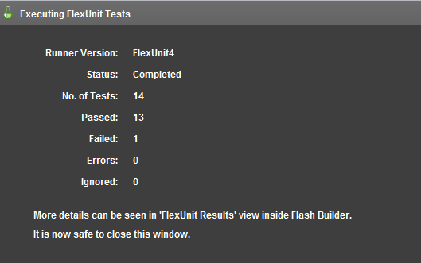
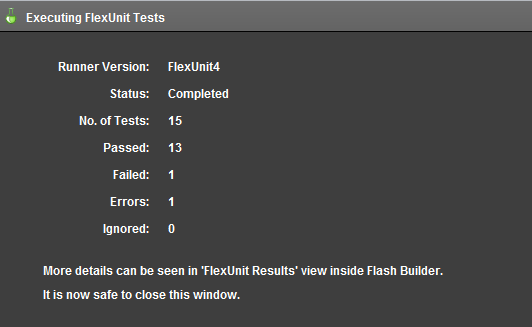
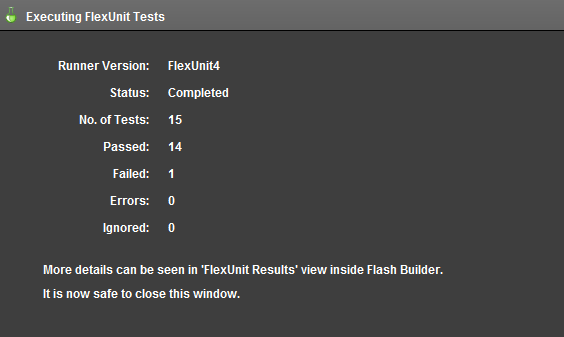
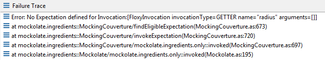
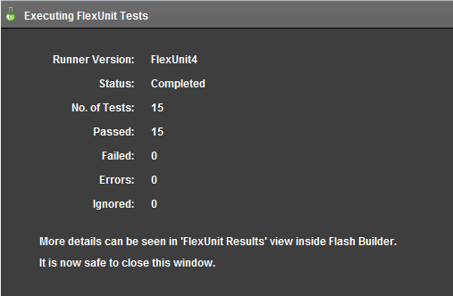
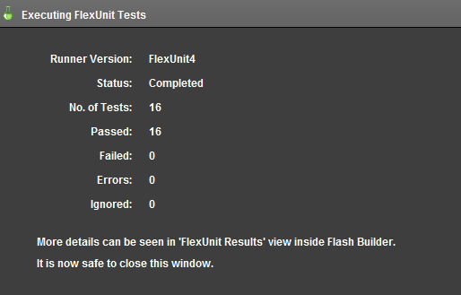

Unit 10 - Mock Classes
 Download Unit Project Files
Download Unit Project FilesIn the beginning of this course you learned that unit testing a class requires that it be isolated from other dependencies. In this way, you can test your code free from unnecessary complexity and potentially unknown side effects introduced by other classes.
Mocking is one technique for isolating your class. It works by providing intelligent substitutes for class dependencies.
Objectives:
After completing this lesson, you should be able to:
- Create test cases using Mock Objects
- Use the Mockolate Rule to automatically create mocks
- Add and validate mock functionality with stubbing, spying, and verification
- Set expectations for mock classes using the Mockolate framework
Topics
In this unit, you will learn about the following topics:
- Understanding the use case for mocks
- Examining available mocking frameworks
- Using Rules
- Working with a mock
- Using the Mockolate Rule
- Creating a test with mock objects
- Individual verifications
Understanding the use case for mocks
When unit testing a system, it is essential that its components are tested in isolation.
Consider this example:
A Schedule class facilitates the storage of appointments in a database.
The scheduleAppointment, cancelAppointment, and modifyAppointment methods of the Schedule class need to be tested.
As you might imagine, each of these methods takes several parameters and each has several different outcomes requiring many tests.
In production, the Schedule class interacts with services that make connections to a remote database to retrieve and store schedule information.
Consider the possible dependencies involved in the Schedule class in the system. First, the class interacts with services in some way, making the services a dependency. The services connect to a database, likely through an application server. The request is sent over the network, meaning that the network card, protocol stack and physical connections are all involved.
There are a huge number of problems with testing this system. If a failure occurs in any of the layers mentioned above, the tests for your Schedule Class will fail. Given that situation, how can you possibly determine the cause of the failure?
Additionally, tests written against an entire system like this can take significant time to retrieve data or produce a failure. This extra time discourages you from running the test frequently.
If you attempt to test the entire system, then you are not testing the Schedule class in isolation and it is therefore not a unit test.
You could try to solve this issue in a number of ways. You could create test versions of the database, but this adds extra effort and maintenance to objects that have nothing to do with the class functionality. You could create your application to return fake or stub data in specific circumstances, but this again causes extra maintenance and means that you are testing your system in a slightly different way than it is deployed.
Test substitutes can be used to solve these problems. Test substitutes are essentially fake versions of objects used for testing. In this case, if code is well architected, you can provide a test substitute for the services used by the Schedule class. These substitutes generally come in two flavors: Fake objects and Mock objects.
Fake objects are object shells that have very little functionality of their own. They may have no functionality, or only functionality that can be verified by simple visual inspection. This lack of functionality means that the Fake object is not suspect when a test failure occurs, thus refocusing the tests back to the Schedule class itself.
The second type of substitute object used is a Mock object. Mocks are similar to Fake objects; however, they are more intelligent and complex internally. Mock objects allow you to set expectations and verify those expectations.
In other words, you could provide a service layer Mock to the Schedule class and indicate that the Mock should expect to see its callTheServer() method called and passed a particular schedule entry.
Mocks are extremely useful and can once again increase the legibility of your test cases. As Mocks are not verifiable via simple visual inspection, they are often built upon a mocking framework that provides the base mock functionality and a suite of tests to prove it works correctly. This again lets you focus on the Schedule class instead of testing all of its external dependencies.
Examining available Mocking frameworks
There are many mocking frameworks available to the ActionScript community. This list should not be considered an exhaustive list, but these are among the more popular at the time of writing.
- asmock
- Provides a specialized runner for FlexUnit 4
- Creates mock versions of a class's public interface
- Allows creation of required and optional results
- mock-as3
- Older mocking framework that required the creation of static classes that act as mocks.
- The author of mock-as3 has released a newer framework named Mockolate which will be used in this unit.
- mock4as
- Minimalistic framework
- Can use subclassing or composition
- With effort, can return very detailed customized results
- mockito-flexTest spy framework that works with FlexUnit 4.x
- Extension of asmock
- mockolate
- Uses a custom FlexUnit Rule to institute mock behavior
- Can be run alongside other custom runners
- Allows creation of strict or nice mocks
- Nice mocks do not require expectations on all behavior allowing testing of only specific functionality.
- Strict mocks require expectations on all behavior.
In this course you will use Mockolate. The developers of Mockolate are active contributors to the FlexUnit project.
Working with a mock
Mocks set up a special form of a substitute object which records all method calls and property access of the mock. Each time a method on the mock is called, the arguments supplied are recorded.
Mocks can also be configured to return known values based on given input. In other words, a mock could be told to return true each time a given method is called providing the minimal necessary logic to test your class.
Setting up a mock requires understanding the expected interaction between the object under test and the mocked dependency as you are simulating the behavior of the real object.
Unfortunately, the close knit behavior of the mock object and the real object it is mocking does create some additional maintenance on the test system. Failure to maintain the mock conditions can create false positives or false negatives.
To use a mock, you must first create an instance of the mock object. Once the object is created, you must inject the mock in place of the real object. Effectively, mocks make use of the object oriented concept of polymorphism to ensure that the system under test will not notice any difference between the real and mock object. The mock object will then begin recording any access including method calls, arguments and property access.
The syntax for creating and using a mock depends on the mocking framework used. For this course you will use Mockolate. Mockolate may be used in two ways: either by setting expectations and verifying the expectations were met or by using test spies to replay the calls on a mocked object and verify its expected behavior.
Mock objects can:
- Return a value or sequence of values
- Dispatch events
- Call other functions
- Throw Errors
Using Rules
Rules are objects that implement a specific interface to allow developer extension of the main test runner provided with FlexUnit 4. Using rules, a developer may create reusable test fixtures, evaluate a test differently or add steps into the test evaluation process. You will examine rules in more detail later; however, they are being briefly introduced at this time as the primary way of using Mockolate is through a Rule.
To use a rule, instantiate a public property in a test case, and decorate the property with the [Rule] metadata:
[Rule]
public var myRuleThatDoesSomethingCool:MyRule = new MyRule();
Using the MockolateRule
Included in the Mockolate library is a rule named MockolateRule. It is specifically for use with FlexUnit 4. The Mockolate rule saves many manual steps required to create mocks.
Different mocking frameworks work in different ways. Mockolate works by creating compiled ActionScript code for the required mock object in memory at runtime. This is an extremely effective and useful technique; however, Flash Player does not allow this operation to occur synchronously. Therefore, setting up a Mockolate mock is an asynchronous process. The Mockolate rule manages these details without your intervention.
To use the rule, include the following:
[Rule]
public var mockRule:MockolateRule = new MockolateRule();
Once the rule is included, you may use a special piece of metadata named [Mock] to create and inject Mockolate mocks. You will do this in the following walkthrough.
Walkthrough 1: Adding a Simple Mockolate Rule
In this walkthrough you will perform the following tasks:
- Change the Circle class to handle default mock creation.
- Create a new test case to handle mocks.
- Establish a MockolateRule to instantiate mock objects for testing.
Steps
-
Import the FlexUnit4Training_wt1.fxp project from the Unit 10/Start folder. If you completed the previous walkthrough, choose the option to overwrite your existing project. If this is your first walkthrough, import it as a new project. Please refer to Unit 2: Walkthrough 1 for instructions on importing a Flash Builder project.
The new FlexUnit4Training project contains everything that all the walkthroughs up until this point have accomplished. Additionally, it includes several new files and additional dependencies to help you through the current walkthrough.
Changing the Circle class -
Open the Circle.as file in the src directory in the package net.digitalprimates.math.
-
Take a look at the constructor for the class:
public function Circle( origin:Point, radius:Number )Currently, the constructor takes two arguments, a
Pointand aNumber. In this walkthrough, you will be mocking this object. Mock automatically passes default parameters for all arguments. This means origin will benulland the radius will be0. A circle cannot have anullorigin or a radius of0, you will need to handle these cases. Later, you will be shown how to pass actual values to the mock. -
Comment out the range check for radius.
// if( ( radius <= 0 || isNaN( radius ) ) { // throw new RangeError( "Radius must be a positive Number" ); // }You are commenting this out for simplicity. The default radius of 0 will cause the range error to be thrown. This will prevent that from happening.
-
Immediately after the range check for radius, add a null check for origin. If origin is null, instantiate to a new
Pointwith x and y of 0.if( origin == null ) { origin = new Point( 0, 0 ); }Your
Circleconstructor should now appear as follows:public function Circle( origin:Point, radius:Number ) { // if( ( radius <= 0 || isNaN( radius ) ) { // throw new RangeError( "Radius must be a positive Number" ); // } if( origin == null ) { origin = new Point( 0, 0 ); } this._origin = origin; this._radius = radius; }
Declare the MockolateRule -
Create a new ActionScript class named CircleMockTest in the math.testcases package within the tests directory.
-
Remove the automatically created constructor from the test class.
-
Add and instantiate a public variable named
mockRuleof typeMockolateRuleto the CircleMockTest class. Mark the variable with[Rule]metadata.[Rule] public var mockRule:MockolateRule = new MockolateRule();If you did not use code-completion, add the import for mockolate.runner.MockolateRule at this time.
-
Add a variable named
mockCircleof typeCircleto the class. Mark the variable with[Mock]metadata.[Mock] public var mockCircle:Circle;[Mock]metadata marks a variable for mock creation and injection. Mock creation is the equivalent of object instantiation within the Mockolate framework. Variables marked with this metadata are prepared for use as Mocks. By using the MockolateRule, this mock will be instantiated with default values prior to any tests being run in the test case.If you did not use code-completion, add the import for net.digitalprimates.math.Circle at this time.
-
Add a method named
shouldBeNotNull(). It will assert that themockCircleis not null.[Test] public function shouldBeNotNull():void { assertThat(mockCircle, notNullValue() ); }If you did not use code-completion, add the import statements for org.flexunit.assertThat and org.hamcrest.object.notNullValue at this time.
-
Save CircleMockTest.as.
Add the CircleMockTest to the CircleSuite -
Open the CircleSuite.as file within the math.testcases package. Add a new public variable named
test4with a type ofCircleMockTest[Suite] [RunWith("org.flexunit.runners.Suite")] public class CircleSuite { public var test1:BasicCircleTest; public var test2:CircleConstructorTest; public var test3:CircleTheory; public var test4:CircleMockTest; } -
Save the CircleSuite.as file.
-
Run the FlexUnit4Training.mxml file.
If FlexUnit4Training.mxml ran successfully you should see the following output in your browser window:
Figure 1: FlexUnit tests passed
Notice the failure. This is because you commented out the range check in Circle. The CircleConstructorTest is expecting this error to be thrown. This is an unfortunate side effect of changing the Circle class. This will be corrected when you inject the mock later.
Creating a test with mock objects
Mockolate has logic for two types of mocks: nice and strict.
- Nice Mocks only require methods and properties with expectations to be stubbed or mocked. Other methods or properties in the mock object will return fake or generic values that will not throw errors, necessarily.
- Strict Mocks throw an InvocationError for any method called that is not mocked or stubbed. In other words, the complete functionality of the mock has to be mocked or stubbed in order to test with the mock.
By default, Mockolate creates nice, injected mocks.
To create a mock, create the variable as normal and decorate it with the [Mock] metadata.
[Mock]
public var myMock:MockableObject;
The [Mock] metadata accepts two possible arguments: type and inject
- type -
strictornice - inject -
trueorfalse- If set to false, will prepare (create the ActionScript byte code) the mock but not create it. The mock will need to be instantiated before it is used. Non-injected mocks are generally only used when the mocked object's constructor has parameters.
By default, Mockolate creates a nice, injected mock.
A strict, non-injected mock would appear as:
[Mock(type="strict",inject="false")]
public var myMock:MockableObject;
Once the mock is created, it can be used in tests. To use the mock you must stub or mock all methods or properties under test.
- stub - specifies optional behaviors or expectations
- mock - specifies required behaviors or expectations
Stubbing or mocking is used to define the behavior of the object. Without stubbing or mocking a method or property will return values of null, false, or some other probably useless value.
A method or property can be stubbed to:
- Return a getter
stub(myMock).getter("name").returns("Useful Mock");
- A method without arguments
stub(myMock).method("toString").returns("Useful Mock");
- With args
stub(myMock).method("add").args(3, 5).returns(8);
- With Hamcrest
stub(myMock).method("repeatIt").args(instanceOf(String)).returns(instanceOf(String));
This list is not exhaustive. If the real object can do it, the mock can likely simulate the behavior. All of these approaches can be used with mocks as well to set required behaviors.
Mocks are used to stand-in as complex objects for a given class or methods under test. Furthermore, they are used to isolate the system under test, so extraneous dependencies are not interfering with test execution or expectations.
Walkthrough 2: Setting Expectations
In this walkthrough you will perform the following tasks:
- Create a nice mock expectation.
- Create a strict mock expectation.
Setting nice mock expectations
-
Open the CircleMockTest.as file from the previous walkthrough.
Alternatively, if you didn't complete the previous lesson or your code is not functioning properly, you can import the FlexUnit4Training_wt2.fxp project from the Unit 10/Start folder. Please refer to Unit 2: Walkthrough 1 for instructions on importing a Flash Builder project.
-
Add a new method
shouldBeEqualCircleMock()decorated with the test metadata.[Test] public function shouldBeEqualCircleMock():void { } -
Set an expectation that the
origingetter will be called at least once. To set an expectation, you use themock()method of theMockolateRule. You will also need to use thegetter()method.mock( mockCircle ).getter( "origin" ).atLeast( 1 );If you did not use code-completion, import mockolate.mock at this time.
-
Save the CircleMockTest.as file.
-
Run the FlexUnit4Training.mxml file.
If FlexUnit4Training.mxml ran successfully you should see the following output in your browser window:
Figure 1: FlexUnit tests passed
You will notice an error. This is because the mock expects the origin getter would be called at least once. However, no call was ever made to the getter. You will need to add this call.
If you had made this call as a stub rather than a mock, this expectation would have been optional and thus fulfilled.
Fulfilling the expectationYou need to fulfill the expectation. You could make the call directly to origin, but this would defeat the purpose of creating the mock. Mocks require some internal workings of how an object operates. Inside the Circle class is a method called
equals(). Equals checks if two circles have the same origin and radius. -
In
shouldBeEqualCircleMock(), but after the mock expectation, create a newCirclecalledcircle. As arguments, pass a new origin atPoint( 0, 0 )and a radius of0.var circle:Circle = new Circle( new Point( 0, 0 ), 0 );You are passing this circle because the default mock created an origin at 0, 0 with a radius of 0.
If you did not use code-completion, add the import for flash.geom.Point.
-
In
shouldBeEqualCircleMock(), after the circle is instantiated, make a call to theequals()method of circle. Pass it themockCircleas a parameter.circle.equals( mockCircle ); -
Save the CircleMockTest.as file.
-
Run the FlexUnit4Training.mxml file.
Figure 2: FlexUnit tests passed
The expectation has now been fulfilled and the test is now passing. Next you will attempt to use a strict mock.
Using a strict mock -
Add the
type="strict"annotation to the Mock metadata ofmockCircle.[Mock( type="strict" )] -
Save the CircleMockTest.as file.
-
Run the FlexUnit4Training.mxml file.
Figure 3: FlexUnit tests passed
You will notice another error. Changing the mock to a strict mock requires you to set expectations on all methods and properties that are called as part of the method call.
If you look at the stack trace you will be able to see the error.
Figure 4: Stack Trace
This error was thrown because no expectation was set for a getter named
radius. You will need to add this expectation. -
At the top of the
shouldBeEqualCircleMock(), add the expectation forradiusto be called at least once.mock( mockCircle ).getter( "radius" ).atLeast( 1 ); -
Save the CircleMockTest.as file.
-
Run the FlexUnit4Training.mxml file.
Figure 5: FlexUnit tests passed
Individual Verifications
You may have noticed a problem with verifying a strict mock's behavior. In a strict mock, all properties and methods need to have an expectation set. If a method is called or a property accessed without an expectation the mock will throw an error. Frequently, this will force you to set expectations outside of the scope of the test, and, while this will produce a correct result it may create unnecessary overhead in test production. This also ties the test to a specific implementation of the mocked object; if the object implementation changes but the result of the test remains the same this test will need to be refactored.
In this case, you may use a nice mock. A nice mock is friendly and places none of the requirements on mocking or stubbing every called method. In fact, it will accept any calls placed on it and simply record the behavior. Nice mocks can be tested by setting expectations and verifying results.
Injecting a Mock Manually
When injected automatically, mocks pass default parameters to any constructor args, 0 for Number, the empty string for Strings, and null for most other objects. In order to set these constructor arguments to anything else you need to inject the mock manually. Mockolate has a special [Mock] annotation called inject that may be applied to modify mock creation. Inject has two values: true or false. A non-injected mock would appear as:
[Mock( inject="false" )]
public var mockPoint:Point;
There are two methods to inject a mock, depending on the type, nice() or strict(). The method used must match the mock or an error will be thrown. Both of these take three parameters: the mock, an optional name and optional arguments. Arguments must be specified as an ordered array.
For Point:
mockPoint = nice( Point, "myPoint", [ 0, 0 ] );
Walkthrough 3: Injecting mocks
In this walkthrough you will perform the following tasks:
- Inject a mock with parameters.
- Set a getter to return a value.
- Revert the changes made to the
Circleclass in Walkthrough 1.
Steps
-
Open the CircleMockTest.as file from the previous walkthrough.
Alternatively, if you didn't complete the previous lesson or your code is not functioning properly, you can import the FlexUnit4Training_wt3.fxp project from the Unit 10/ Start folder. Please refer to Unit 2: Walkthrough 1 for instructions on importing a Flash Builder project.
Injecting a mock manually -
Modify the current mock
Circleto create the mock but not inject. To do so, add the inject annotation to the Mock metadata decorating themockCirclevariable.Replace:
[Mock( type="strict" )] Public var mockCircle:Circle;With
[Mock( inject="false", type="strict" ) Public var mockCircle:Circle; -
Create a new method named
setup()decorated with the Before metadata.[Before] public function setup():void { } -
In the before method, inject a strict mock using the
strict()method. Pass this method theCircleclass, "mockCircle", and the array[ new Point( 0, 0 ), 1 ]. Assign the return forstrict()to themockCircleinstance.[Before] public function setup():void { mockCircle = strict( Circle, "mockCircle", [ new Point( 0, 0 ), 1 ] ); }Since the constructor arguments are now being passed, the range test in the
Circleconstructor is now satisfied. However, the getters will still return default values. Mocks do not use any of the instance properties. You will need to mock the getters forradiusandoriginto return values.If you did not use code-completion, add the import for mockolate.strict.
-
Replace the lines:
mock( mockCircle ).getter( "origin" ).atLeast( 1 ); mock( mockCircle ).getter( "radius" ).atLeast( 1 );with
mock( mockCircle ).getter( "origin" ).returns( new Point( 0, 0 ) ).atLeast( 1 ); mock( mockCircle ).getter( "radius" ).returns( 1 ).atLeast( 1 );This will force the getter and setter to return the required values.
If you were to run the test now, it would pass with no errors. However, this does not fulfill the test "shouldBeEqualCircleMock"
-
Change the radius of the circle you instantiate, from a value of 0, to a value of 1.
var circle:Circle = new Circle( new Point( 0, 0 ), 1 );We want to compare that this circle is equal to our mock circle, so they should both have the same radius.
-
Replace the line:
circle.equals( mockCircle );With
assertTrue( circle.equals( mockCircle ) );If you did not use code-completion, add the import for org.flexUnit.asserts.assertTrue
Revert the changes to the Circle class. -
Open the net.digitalprimates.math.Circle.as file in the src directory.
In Walkthrough 1, you modified the
Circleclass to accept invalid parameters so that you could use mocks. You will now need to revert these changes. -
Uncomment the following section:
// if ( ( radius <= 0 ) || isNaN( radius ) ) { // throw new RangeError("Radius must be a positive Number"); // } -
Remove the origin null check. This section is no longer required.
Remove:
if( origin == null ) { origin = new Point( 0, 0 ); } -
Save the Circle.as file.
-
Run the FlexUnit4Training.mxml file.
Figure 1: FlexUnit tests passed
The mock is now acting as a stand in of a Circle, accepting parameters and returning the values you have requested. In this way, any object can be mocked to operate exactly as expected, or to test that the expected behaviors are called on the object. In the next walkthrough, you will learn how to mock methods to accept parameters and return values.
Walkthrough 4: Method Mocking
In this walkthrough you will perform the following tasks:
- Mock the
Pointclass. - Mock the
add()method of thePointclass.
Steps
-
Create a new ActionScript class named DistanceTest in the math.testcases package within the tests directory.
Alternatively, if you didn't complete the previous lesson or your code is not functioning properly, you can import the FlexUnit4Training_wt4.fxp project from the Unit 10/ Start folder. Please refer to Unit 2: Walkthrough 1 for instructions on importing a Flash Builder project.
Create the test fixture -
Remove the automatically created constructor from the test class.
-
Create a private static constant named
TOLERANCEas aNumber, with a value of.01.private static const TOLERANCE:Number = .01; -
Add and instantiate a public variable named
mockRuleof typeMockolateRuleto theLayoutTestclass. Mark the variable with[Rule]metadata.[Rule] public var mockRule:MockolateRule = new MockolateRule();If you did not use code-completion, add the import for mockolate.runner.MockolateRule at this time.
-
Add a variable named
mockPointof typePointto the class. Mark the variable with[Mock]metadata.[Mock] public var mockPoint:Point;If you did not use code completion, add the import for flash.geom.Point at this time.
Mocking a method -
Create a new test method named
shouldBeEqualDistance(). Decorate it with[Test]metadata.[Test] public function shouldBeEqualDistance():void { } -
Create a new
PointcalledtestPointwith x and y values of 5 and 5, respectively.var testPoint:Point = new Point( 5, 5 ); -
Create a new
PointcalledendPointwith x and y values of 10 and 10, respectively.var endPoint:Point = new Point( 10, 10 ); -
Create one last
PointcalledsummedPoints. Do not instantiate it at this time.var summedPoints:Point; -
Add an expectation for the
add()method ofmockPointto take an argument,testPoint, and return a newPointwith x and y values of 10 and 10.mock( mockPoint ).method( "add" ).args( testPoint ).returns( new Point( 10, 10 ) );The mock will now expect the
add()method ofmockPointto be called with thetestPointparameter. When it does, it will return aPointwith x and y values of 10 and 10. -
Make a call to
mockPoint.add()passing it the parametertestPointand assigning the return tosummedPoints.summedPoints = mockPoint.add( testPoint ); -
Add a call to
assertThat()passing it the parametersendPointand a newCloseToPointMatherwith parameterssummedPointsandTOLERANCE.assertThat( endPoint, new CloseToPointMatcher( summedPoints, TOLERANCE ) );If you did not use code completion, add the imports for org.flexunit.assertThat and matcher.CloseToPointMatcher at this time.
-
Save the DistanceTest.as file.
Add DistanceTest to the test suite -
Open the CircleSuite.as file within the math.testcases package. Add a new public variable named
test5with a type ofDistanceTest[Suite] [RunWith("org.flexunit.runners.Suite")] public class CircleSuite { public var test1:BasicCircleTest; public var test2:CircleConstructorTest; public var test3:CircleTheory; public var test4:CircleMockTest; public var test5:DistanceTest; } -
Save the CircleSuite.as file.
-
Run the FlexUnit4Training.mxml file.
Figure 1: FlexUnit tests passed
Summary
Mocks are created and plugged in to test cases to further isolate test cases and classes validating their functionality with minimal external dependency.
The mocking framework that this course uses is Mockolate. Mockolate features:
Nice mocks
Strict mocks
Mocks instantiated with a custom FlexUnit rule
Can be run alongside other FlexUnit custom runners
When a MockolateRule is used, mocks are instantiated as
niceby default.Setting expectations for
strictmocks requires an expectation for every method that will be run.Expectations can be verified individually on nice mocks, which allows for greater specificity.